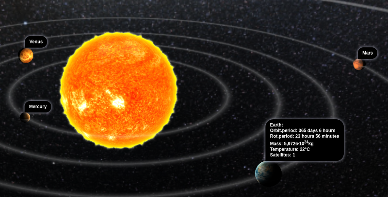
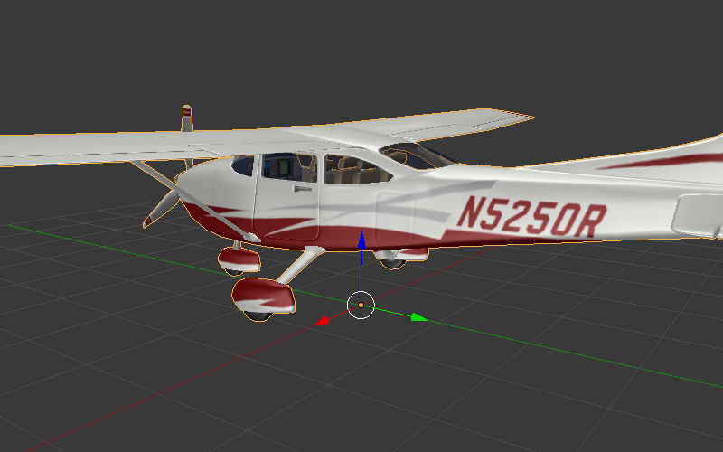

物体¶
目录
物体是在3D场景空间中放置的不同类型（网格，照相机，灯等）的组件。
静态和动态物体¶
物体可以是静态或动态的。
静态物体 是在运行程序时不能移动，动画或以任何其它方式改变的物体。这样的物体可以提高性能，如果它们具有相同的材质可以合并在一起。
动态物体 在运行的应用程序可以移动，动画或通过其手段改变。它们也可以与其他物体交互，包括静态物体。动态物体不会彼此或与静态物体相结合。
只有 MESH 和 EMPTY 类型物体可以是静态的或是动态的。所有其他物体类型，如 CAMERA 和 ARMATURE，始终是动态的。
静态 MESH 物体比动态的渲染得快得多，因此，为了更好的性能，最好将动态网格数保持在最低水平。任何其他类型的物体，静态和动态，不显著影响性能。
具有动画，物理或父关系的是一个动态物体，被认为是动态，以及由下面的逻辑节点控制的物体：
播放动画
变换物体
移动到
继承材质
API方法是关注物体的运动，复制和动画（包括物体和节点材料）只能应用于动态物体。为了使物体的不动态设置的运动可能，有必要激活设置 Force Dynamic Object 选项。
设置¶
以下是功能支持所有类型的物体：变换，数据引用，父物体，组成员和一套Blend4Web的特殊属性。
物体选项卡¶

变换面板¶

- 变换 > 位置
位置坐标。
- 变换 > 旋转
旋转角度。对于物体的旋转所有可用的模式可以使用（
旋转Mode）。但是，只有四元（WXYZ）和XYZ Euler都支持 物体动画.- 变换 > 缩放
缩放。所有3分量（X，Y，Z）应该是相同的。缩放不支持物理物体。

层次细节面板¶
- 细节层次 > LOD 转换速率
参数用于平滑LOD物体之间的切换。它定义在该LOD物体由下一LOD物体更换前仍然渲染的额外距离。分配到主要物体。测量值为在物体的边界球半径的分数。
动画面板¶

- 动画 > 应用默认动画
传到引擎开始后播放物体的动画。
- 动画 > 动画混合
只对骨骼物体。允许骨骼动画之间进行混合。
- 动画 > 行为
到达最后一帧时动画的行为：
完成停止- 停止完成重置- 停止并跳到零帧，Loop- 永远重复。
导出选项面板¶

- 导出选项 > 不导出
不要导出此物体。
- 导出选项 > 应用修改器
应用导出物体的修改器。如果使用
SKIN修改器，我们建议导出前应用掉它，因为它会重置顶点颜色和UV层可能会导致错误。- 导出选项 > 应用缩放和修改器
一旦导出，应用物体的缩放和修改器。
- 导出选项 > 导出顶点动画
导出以前创建并保存的顶点动画。只适用于
MESH类型物体。- 导出选项 > 导出形变键
导出形变键。只适用于
MESH类型物体。
注解
以下属性是相互排斥的：应用修改器，应用缩放及修改器，导出顶点动画 和 导出形变键 。
渲染属性面板¶

- 渲染属性>隐藏
与此属性启用的物体将在加载时被隐藏。
- 渲染属性 > 不要渲染
禁止物体的渲染（例如用于有用的物理物体）。
- 渲染属性 > 禁止视椎体剔除
禁用视椎体剔除优化。
- 渲染属性 > 强制动态物体
强制物体变成了 动态物体.
- 渲染属性 > 动态几何体
允许通过Blend4Web API来重载物体的几何形状。

广告牌面板¶
- 看板
使用物体作为看板（即自动定向面对摄像机）。
- 看板 > 保留全局方向和缩放
考虑到（世界空间）看板的物体的旋转和缩放。该物体沿Blender的Y轴查看时将朝明显的被引导到相机。启用
看板复选框后可用。- 看板 > 看板类型
看板方向模式。
Spherical（默认） - 物体一面始终朝向相机，不管视角，Cylindrical- 类似于Spherical，但旋转仅限于Blender的世界Z轴。启用看板后变得可用。
反射面板¶

- 反射 > 被反射
启用后物体被会在动态镜面中被反射。
- 反射 > 仅被反射
物体被反射但仍将看不见自身。开启
反射 > 反射性后可用。注解
如果
Reflexible Only参数与Shadows > Cast Only参数同时启用，引擎将不会渲染物体本身，而是将渲染它的影子和反射，像下面的图片所示。
- 反射 > 反射
当启用时该物体表面反射的其他物体。
- 反射 > 反射面
对于一个空物体定义了反射面的Name文本字段。启用
反射 > 反射后可用。
元标签面板¶
- 元标签
添加物体的元标签的接口：
- 元标签 > 标题
物体的标题。
- 元标签 > 类别
物体的类别。
- 元标签 > 描述
物体描述。根据
说明源，此字段接受描述文本本身，或包含的文件的名称。- 元标签 > 描述源
为说明来源类型：文本或文本文件。


{kind=link}
{kind=link}
锚设置¶
锚可以用来附加注释到3D物体。不管摄像机位置注释显示在物体附近，甚至在整个动画跟随它。
{kind=link}
注释完全可以在Blender中创建。你需要做的是放置一个 Empty 物体在需要的位置，然后启用 Anchor 属性。对于注释文本可以在 Meta Tags 面板的 Title 和 Description 字段进行分配。

- 启用锚
使用此参数可添加锚（2D标签）物体的界面。唯一适用于
EMPTY物体。- 类型
锚类型
Annotation- 内容从 元标签 所获得再分配给物体，显示出标准的部分。Custom Element- 从当前网页的任意HTML元素用作锚。Generic- 一个锚点的位置，可以使用anchorsAPI模块进行检测。
默认值是
Annotation。- HTML元素ID
这指定了将被用作锚的HTML元素的ID。这是仅当
Type参数设置为Custom Element.- 可见检测
检测锚物体是否被其他物体重叠。打开此选项会降低性能，应该只在必要时使用。
- 最大宽度
此参数通过一个预定义的值来限制扩展信息窗口（测量用 CSS像素）。只有当
Type参数设置为Annotation时才可用，它被设置为默认值为250。
物体变换API¶
注解
请确保您要变换的物体是 动态物体.
使用 transform 模块的下列方法在引擎中移动物体：
- get_translation()
获得在世界空间的物体中心坐标。带一个参数的方法返回一个新向量（一个非优化选项），同时用两个参数的方法需要一个额外的矢量记录结果。
- get_translation_rel()
类似于
get_translation（）方法，但如果此物体有父级，得到的坐标在父级的空间测量。- set_translation(), set_translation_v()
移动物体的中心到指定的位置。第一种方法需要单独的坐标作为参数，而第二个需要三元矢量（
Array或Float32Array）。- set_translation_rel(), set_translation_rel_v()
类似
set_translation()和set_translation_v()，但如果这个物体有父级，设定坐标为测量父级的空间。- get_rotation()
获取在世界空间的物体的旋转四元数。类似
get_translation()，调用此函数也有两种选择。- get_rotation_rel()
获取物体的在其父级空间的旋转四元。类似
get_translation_rel()，调用此函数也有两种选择。- set_rotation(), set_rotation_v()
设置在世界空间物体的旋转四元数。第一个功能需要单独的坐标参数，而第二个需要一个四元矢量（
Array或Float32Array）。- set_rotation_rel(), set_rotation_rel_v()
设置物体在其父的空间中的旋转四元数。第一个功能需要单独的坐标参数，而第二个需要一个四元矢量（
Array或Float32Array）。- get_scale()
获取物体在世界空间的缩放。
- get_scale_rel()
获取物体在其父的空间的缩放。
- set_scale()
设置物体在世界空间的缩放。统一对应于物体的原始缩放。值小于统一值是平均缩小，比统一值大 - 扩大。注意，不是所有的物体可以被缩放。特别是不允许物理物体缩放。
- set_scale_rel()
设置物体在其父的空间的缩放。
- set_rotation_euler(), set_rotation_euler_v()
使用欧拉角设置物体的旋转。一个 intrinsic YZX 系统被使用（这意味着角遵循YZX顺序和坐标原点旋转，并且每角采取了一个新的位置）。
- set_rotation_euler_rel(), set_rotation_euler_rel_v()
使用欧拉角在其父的空间中设置物体的旋转。
- move_local()
相对移动到原来的位置的对象（在局部空间）。
- rotate_x_local(), rotate_y_local(), rotate_z_local()
相对于物体原来位置的（在本地空间）旋转。
获取物体API¶
对物体执行任何操作，您首先需要得到它（找到到它的链接）。有几个API函数是做这个的。有链接的物体具有 Object3D 类型。
- get_object_by_name()
按名称获取物体。
// ... var obj = m_scenes.get_object_by_name("Object"); // ...
- get_object_by_dupli_name()
通过空名称和DUPLI名称找复制物体。
// ... var obj = m_scenes.get_object_by_dupli_name("Empty", "Object"); // ...
- get_object_by_dupli_name_list()
通过空名称和DUPLI名单（
String类型元素的数组）获得复制物体。// ... var obj = m_scenes.get_object_by_dupli_name_list(["Empty1", "Empty2", "Object"]); // ...
- get_object_name_hierarchy()
用一个给定的物体，返回物体名层次队列（从最高层的父物体到物体本身）。
// ... var names = m_scenes.get_object_name_hierarchy(obj); // ...
- check_object_by_name()
检查是否具有给定名称的物体在场景存在。
// ... var object_exists = m_scenes.check_object_by_name("Cube"); // ...
- check_object_by_dupli_name()
检查复制物体是空的名字和DUPLI名字出现在场景。
// ... var object_exists = m_scenes.check_object_by_dupli_name("Empty", "Cube"); // ...
- check_object_by_dupli_name_list()
检查复制物体是空的名字和DUPLI名单（
String类型元素的数组）出现在场景。// ... var object_exists = m_scenes.check_object_by_dupli_name_list(["Empty1", "Empty2", "Object"]); // ...
- get_object_name()
获取物体的名称。
// ... var object_name = m_scenes.get_object_name(obj); // ...
物体选择¶
为了使一个特定的物体能被选择，需要 Selection and Outlining 面板上的 Selectable 复选框启用。
注解
确保在 Scene > Object Outlining 面板被设置为 ON 或 AUTO。
物体选择也可以通过API编程方式，例如，在 scenes.js 模块有基于二维的画布坐标选择物体的 pick_object 函数。
// ...
var x = event.clientX;
var y = event.clientY;
var obj = m_scenes.pick_object(x, y);
// ...
或使用 逻辑编辑器.
如果选择的物体已启用了 Object > Selection 和轮廓面板上的 Enable Outlining 和 Outline on Select 选框，那么 pick_object 函数调用将激活 外轮廓辉光动画 。
注解
如果选定的物体是透明的（Blend，Add 和 Sort 透明度类型），外轮廓发光只能在具有 Alpha 高于0.5的部分可见。
复制物体（实例化）¶
它通常需要复制（使的实例）中的应用程序的工作物体。
- 复制物体也有其局限性：
只有
MESH物体可以被复制物体应该是 动态 （启用
渲染属性>强制动态 Object）源物体应该属于活动场景
制作一个简单的复制¶
在简单复制的情况下，新的物体将共享与原始物体的网格。因此，如果原始物体的网格被改变，则复制的物体的网格也将被改变。为了让简单复制可能的，但它足以打开``Blend4Web>强制动态Object``源物体的属性设置。
制作深复制¶
在深度复制的情况下，新物体将具有独特的性质，即它会有自己的网格。因此，如果原始物体的网格被改变，则复制的物体的网格将不被改变。另外，在复制的物体在画布纹理不同的纹理和不同一个像它与简单复制的情况。为了使深度复制可能，要求源物体启用 渲染属性>动态几何 复选框. |
在运行时复制物体可以使用 objects.js 模块的 copy 方法进行。此方法需要三个参数：源物体的id，新物体一个唯一的名称和布尔值，以指定复制模式（即简单或深度）。默认情况下，简单复制将被执行。
新创建的物体，应添加到场景。这可以用 scenes.js 模块的 append_object 方法进行。新物体应该被传递给它作为参数。
// ...
var new_obj = m_objects.copy(obj, "New_name", true);
m_scenes.append_object(new_obj);
m_transform.set_translation(new_obj, 2, 0, 2);
// ...
四元数¶
四元数是用于执行旋转的四分量矢量。四元数优于其它旋转方法，例如：
四元数没有多解，并且不像欧拉角依赖于的旋转顺序。
四元数的内存使用是更有效的（少2-4倍，取决于所使用的矩阵）。
在一系列旋转的情况下，比矩阵有更好的计算效率。
数值稳定 - 从浮点数不准确而产生乘法错误的补偿。
便捷的插值方法。
- 四元有一些缺点：
用四元数来旋转向量比用矩阵来旋转向量要浪费计算成本。
很难将四元数用到非旋转变换上（例如透视或正交投影）。
该引擎具有许多功能，能更方便地跟四元数工作：
- quat.multiply
四元数乘法。需要注意的是用B四元数左乘A四元数A * B 是用A旋转物体。比如，物体已经具有一定的旋转B上，我们加了新的A旋转。
- quat.setAxisAngle
四元数是任意相对于任意轴（矢量）的任意角度旋转的另一种表现。从向量的末端来观看时旋转的正方向定义为逆时针。例如 :code`quat.setAxisAngle([1, 0, 0], Math.PI/2, quat)` 用四元数对物体相对于X轴旋转了90度（如果从X轴末端查看是逆时针）。
- quat.slerp
四元数球面插值。用于平滑物体的旋转和动画。
- util.euler_to_quat, util.quat_to_euler.
从欧拉角转换到和转换回欧拉角。
四元数例子¶
我们需要在水平面向右旋转物体60度。我们有一个在Blender里有个名为 “Cessna” 的模型。
{kind=link}
让我们在 aircraft 变量保存引用：
var aircraft = m_scenes.get_object_by_name("Cessna");
旋转：
顺时针转动对应于旋转到右侧（即在负方向）。
60 度 = \(\pi/3\) 弧度.
因此，我们得到：
// compose quaternion
var quat_60_Z_neg = m_quat.setAxisAngle([0, 0, 1], -Math.PI/3, m_quat.create());
// get old rotation
var quat_old = m_transform.get_rotation(aircraft);
// left multiply: quat60_Z_neg * quat_old
var quat_new = m_quat.multiply(quat_60_Z_neg, quat_old, m_quat.create());
// set new rotation
m_transform.set_rotation_v(aircraft, quat_new);
优化的版本不创建新的物体：
// cache arrays as global vars
var AXIS_Z = new Float32Array([0, 0, 1])
var quat_tmp = new Float32Array(4);
var quat_tmp2 = new Float32Array(4);
...
// rotate
m_quat.setAxisAngle(AXIS_Z, -Math.PI/3, quat_tmp);
m_transform.get_rotation(aircraft, quat_tmp2);
m_quat.multiply(quat_tmp, quat_tmp2, quat_tmp);
m_transform.set_rotation_v(aircraft, quat_tmp);